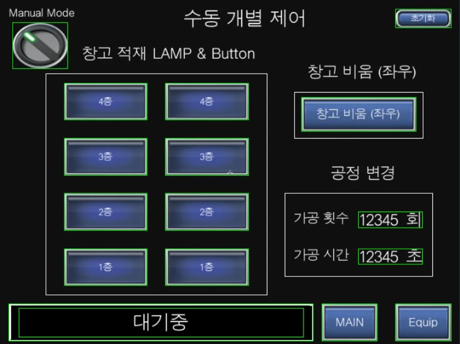

Sequence Control
- 층별 적재와 비우기 시퀀스
- 자동과 수동 운전 분리
- 층간 작업 순서 조건 적용
06 - SEQUENCE CONTROL
Mitsubishi PLC와 HMI로 층별 적재, 비우기 및 수동 운전을 구현한 교육 프로젝트
WHAT I DID
PROJECT IMAGES

PLC 시퀀스에 따라 창고 모듈이 동작하는 교육 장비

설비 상태를 확인하고 층별 위치를 제어하는 HMI 화면
SYSTEM FLOW
운전과 위치 선택
시퀀스와 조건 처리
위치 이동과 감지
층별 적재와 비우기
상태 표시
PROBLEM SOLVING
OR와 NOT 접점의 배치가 잘못되어 차단 조건과 관계없이 출력 코일이 동작했습니다.
자기유지와 차단 조건을 단계별로 다시 확인했습니다. 접점 순서와 분기 구조를 수정했습니다.
수동 운전과 층별 시퀀스가 조건에 맞게 동작하는 것을 확인했습니다.